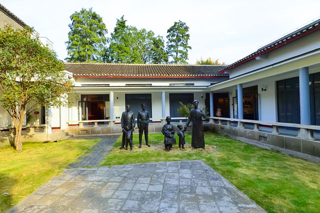

-

首义文化区
首义文化旅游区，位于武汉市武昌区。旅游区是国家AAAA级旅游景 区，是湖北省武汉市在纪念辛亥革命100周年之际打造的经典文化旅 游项目，也是武汉设施最为完备的免费景区之一。景区包括辛亥革命 武昌起义纪念馆、首义广场、辛亥革命博物馆、紫阳湖公园、起义 门、首义碑林等景点。首义文化旅游区，是集教育、观赏、休闲、购 物、娱乐于一体的综合性主题文化旅游区。
湖北省武汉市武昌区首义路198 -
武汉革命博物馆
武汉革命博物馆主要由武昌农民运动讲习所旧址纪念馆、毛泽东旧居纪念馆、陈潭秋烈士纪念馆和武昌起义门组成，其中，毛泽东旧居及 中央农民运动讲习所旧址纪念馆入选《全国红色旅游经典景区名录》，是武汉市乃至湖北著名的红色旅游景区。武汉革命博物馆是展示近 现代文物、革命文物、党史文物和展示大革命史、中共党史及重大历史事件的综合性博物馆，是武汉地区红色景点较多、内涵较丰富、资 源保护较早、知名度较高的红色旅游资源富集区，是湖北红色旅游好地方。
湖北省武汉市武昌区武昌红巷13号 -
八七会议会址纪念馆
八七会议会址纪念馆依托八七会议旧址而建，是1920年英国人建造的一排西式公寓(时称“怡和新房”)的一部分，1927年8月7日中共中央在 此召开紧急会议，史称“八七会议”。纪念馆于1978年8月7日正式成立对外开放，1980年5月由邓小平同志在北京题写 “八七会议会址”馆 名，7月来馆指导会址复原工作。由于八七会议在中共党史中独特而重要的历史地位，纪念馆先后被命名为“全国重点文物保护单位”、“全 国青少年教育基地”、“全国爱国主义教育示范基地”、“全国百家红色旅游经典景区”，2016年入选全国20个“我最向往的党史纪念地”之一。
湖北省武汉市武昌都府堤41号
-

毛泽东旧居
毛泽东同志旧居位于湖北省武汉市武昌都府堤41号，为“全国重点文物保护单位”、“红色旅游经典景区”，是栋晚清民居式建筑，坐东朝 西，面积为436平方米，砖木结构，青砖灰瓦，传统的天井、堂屋加厢房组合成三进屋宇。原房于1956年因修武昌公园而拆除，现房屋为 1967年经中共湖北省委和武汉市委决定按原貌重建，复原的7处陈列有前厅，毛泽东、杨开慧夫妇的卧室(毛泽东撰写完成《湖南农民运 动考察报告》的地方)，毛泽东岳母和毛岸英、毛岸青的卧室，毛泽民、蔡和森住过的房间，彭湃、毛泽覃住过的房间，夏明翰住过的房 间，毛泽东接见工农基层干部的后厅。
湖北省武汉市江岸区鄱阳街129-141号 -
中共农民运动讲习所旧址纪念馆
中央农民运动讲习所旧址，1958年筹建，1963年建成开放，并由周恩来总理题写馆名。讲习所是第一次国共合作时期毛泽东倡议创办的 一所培养全国农民运动干部的学校，由毛泽东实际主持工作，参与制定教育方针和教学计划，瞿秋白、李立三等共产党人任教，学员毕业 后多被委任为农民协会特派员，领导开展农民运动。
湖北省武汉市武昌红巷13号 -
中共五大会址纪念馆
中共五大会址纪念馆位于“中国第一红街”—都府堤20号，是中共创始人之一毛泽东、陈潭秋早期革命活动旧址，原为1918年创办的国立 武昌高等师范学校附属小学，中国共产党第五次全国代表大会于1927年在此召开，同年中国共产主义青年团四大也在此召开。纪念馆于 2006年筹建，2007年11月建成开放，2013年入选第七批全国重点文物保护单位。
武汉市武昌都府堤20号